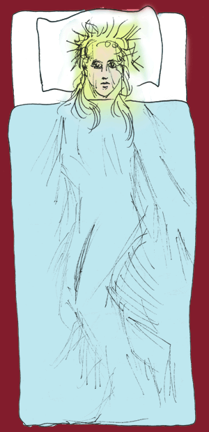

Jilin, Circa 1260
by Sam Byfield
Stray dogs crowd the street tonight.
The moon is yellow from coal smoke.
A strange heat, as if the fires of heaven
were descending. My wife pretends
to sleep, betrayed by her stillness.
Nothing natural is still.
There are a dozen different rumours:
Warlords, pestilence, floods.
The blossoms of Spring did not arrive
this year. The breeze carries the ring
of blacksmiths. My wife opens her eyes,
unreadable as the future.

Read ‘Jilin, circa 1261′, in Asian Cha.
 |
|